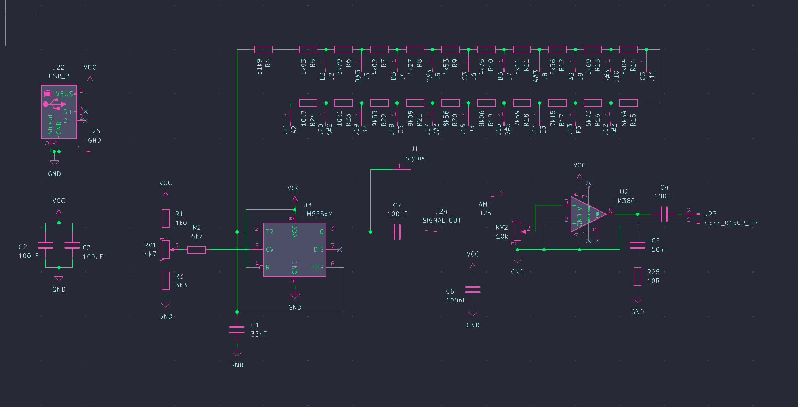
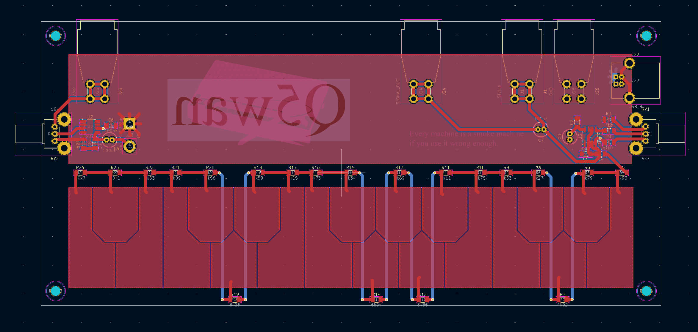

I got interested in this project after seeing this video by Mitxela. His is a small business card version that uses the analog-to-digital converter of the ATtiny85 and sends this information via MIDI over USB.
However, I wanted to do something analog and full-sized. I decided to use a 555 timer to generate the signals, and after looking online, I found this article by drj113. He had wired the 555 up as shown below. This allows for a 50/50 duty cycle on all the notes.

The OP-AMP is an LM386. It's connected to this 2" speaker. I chose it as it has a rather good frequency response for the frequency range the stylophone can generate. I went for resistors with 1% tolerance as it wasn’t really much more expensive than the less precise ones. The keys are ENIG gold-plated.
I designed a PCB in KiCad and ordered it from JLCPCB. I then soldered all the components and got it working straight away.

The only real problem I ended up having was with the USB power. I was originally powering the stylophone from the USB port on a desktop computer, but I noticed a rather audible frequency coming from the speaker when using certain USB power supplies. I ended up having to add some extra capacitors to the back of the board to filter the power supply and output of the OP-AMP.
My friend Jonathan designed a case for it in Fusion 360, which I then 3D printed.
You can click here to download the project from my GitHub.